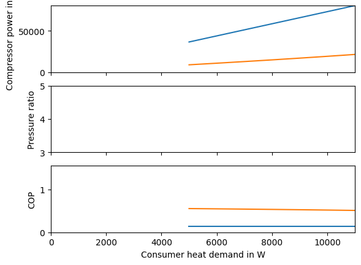
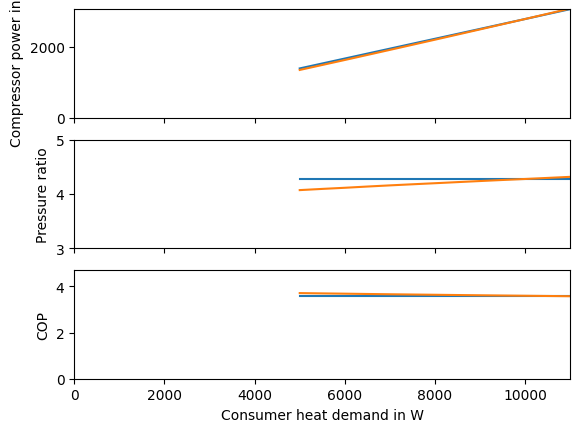
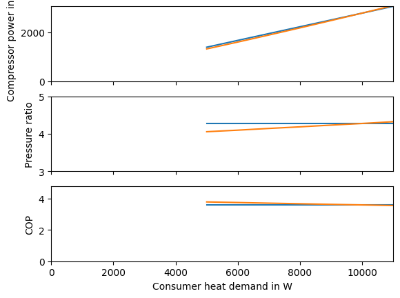
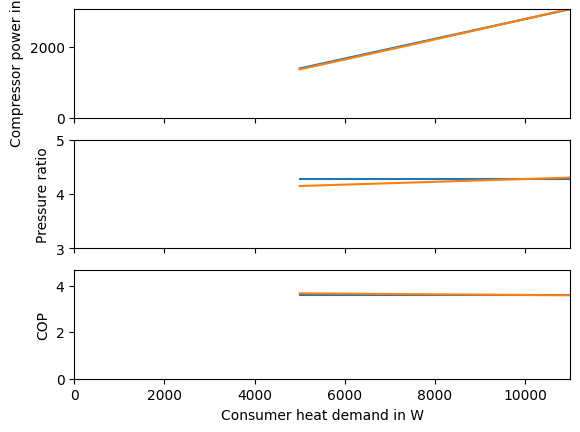

Disection of the partload efficiency#
Introduction#
look at each part load model dimension
The partload_heat_pump function imported in this section lies in a separate python document. You can download it:
heat_pump_models.py.
from heat_pump_models import partload_heat_pump
import pandas as pd
import numpy as np
from matplotlib import pyplot as plt
nwk = partload_heat_pump("R290")
nwk.save("R290-design-state")
WARNING:root:Invalid value for pr: pr = 0.012911470394437831 below minimum value (1) at component compressor.
WARNING:root:Invalid value for Q: Q = 77895.53017110408 above maximum value (0) at component evaporator.
WARNING:root:Invalid value for ttd_u: ttd_u = -107.86577450269755 below minimum value (0) at component evaporator.
WARNING:root:Invalid value for pr: pr = 77.45051256368083 above maximum value (1) at component expansion valve.
WARNING:root:Invalid value for zeta: zeta = -862274047384.0155 below minimum value (0) at component expansion valve.
WARNING:root:Invalid value for pr: pr = 0.012911470394437801 below minimum value (1) at component compressor.
WARNING:root:Invalid value for Q: Q = 77895.53017080454 above maximum value (0) at component evaporator.
WARNING:root:Invalid value for ttd_u: ttd_u = -107.8657745026814 below minimum value (0) at component evaporator.
WARNING:root:Invalid value for pr: pr = 77.45051256368102 above maximum value (1) at component expansion valve.
WARNING:root:Invalid value for zeta: zeta = -862274047390.6611 below minimum value (0) at component expansion valve.
Effect of compressor efficiecy#
Q_design = -10e3
heat_range = np.linspace(0.5, 1.1, 13) * Q_design
results_heat = pd.DataFrame(
index=heat_range,
columns=["compressor-power", "pressure-ratio", "COP"]
)
T_heat_partload = 5
cd, cp, ev = nwk.get_comp(["condenser", "compressor", "evaporator"])
c11, c12 = nwk.get_conn(["11", "12"])
print(c11.m.val_SI)
c11.set_attr(T=T_heat_partload)
for heat in heat_range[::-1]:
cd.set_attr(Q=heat)
nwk.solve("design")
results_heat.loc[heat, "compressor-power"] = cp.P.val
results_heat.loc[heat, "pressure-ratio"] = cp.pr.val
results_heat.loc[heat, "COP"] = abs(cd.Q.val) / cp.P.val
WARNING:root:Invalid value for pr: pr = 0.012464123621098815 below minimum value (1) at component compressor.
WARNING:root:Invalid value for Q: Q = 69559.7951300269 above maximum value (0) at component evaporator.
WARNING:root:Invalid value for ttd_u: ttd_u = -108.26933615335582 below minimum value (0) at component evaporator.
WARNING:root:Invalid value for pr: pr = 80.23026972447842 above maximum value (1) at component expansion valve.
WARNING:root:Invalid value for zeta: zeta = -1123138177817.2478 below minimum value (0) at component expansion valve.
WARNING:root:Invalid value for pr: pr = 0.012464123621098692 below minimum value (1) at component compressor.
WARNING:root:Invalid value for Q: Q = 66397.98626048022 above maximum value (0) at component evaporator.
WARNING:root:Invalid value for ttd_u: ttd_u = -108.26933615335645 below minimum value (0) at component evaporator.
WARNING:root:Invalid value for pr: pr = 80.23026972447923 above maximum value (1) at component expansion valve.
WARNING:root:Invalid value for zeta: zeta = -1232650517150.8967 below minimum value (0) at component expansion valve.
WARNING:root:Invalid value for pr: pr = 0.012464123621098605 below minimum value (1) at component compressor.
WARNING:root:Invalid value for Q: Q = 63236.17739092332 above maximum value (0) at component evaporator.
WARNING:root:Invalid value for ttd_u: ttd_u = -108.26933615335503 below minimum value (0) at component evaporator.
WARNING:root:Invalid value for pr: pr = 80.2302697244798 above maximum value (1) at component expansion valve.
WARNING:root:Invalid value for zeta: zeta = -1358997195159.2954 below minimum value (0) at component expansion valve.
-38.724529374295074
WARNING:root:Invalid value for pr: pr = 0.012464123621098415 below minimum value (1) at component compressor.
WARNING:root:Invalid value for Q: Q = 60074.36852136795 above maximum value (0) at component evaporator.
WARNING:root:Invalid value for ttd_u: ttd_u = -108.26933615335355 below minimum value (0) at component evaporator.
WARNING:root:Invalid value for pr: pr = 80.23026972448103 above maximum value (1) at component expansion valve.
WARNING:root:Invalid value for zeta: zeta = -1505814066658.969 below minimum value (0) at component expansion valve.
WARNING:root:Invalid value for pr: pr = 0.012464123621098182 below minimum value (1) at component compressor.
WARNING:root:Invalid value for Q: Q = 56912.55965182801 above maximum value (0) at component evaporator.
WARNING:root:Invalid value for ttd_u: ttd_u = -108.26933615335378 below minimum value (0) at component evaporator.
WARNING:root:Invalid value for pr: pr = 80.23026972448255 above maximum value (1) at component expansion valve.
WARNING:root:Invalid value for zeta: zeta = -1677774315011.7788 below minimum value (0) at component expansion valve.
WARNING:root:Invalid value for pr: pr = 0.012464123621097943 below minimum value (1) at component compressor.
WARNING:root:Invalid value for Q: Q = 53750.7507822818 above maximum value (0) at component evaporator.
WARNING:root:Invalid value for ttd_u: ttd_u = -108.26933615335378 below minimum value (0) at component evaporator.
WARNING:root:Invalid value for pr: pr = 80.2302697244841 above maximum value (1) at component expansion valve.
WARNING:root:Invalid value for zeta: zeta = -1880964975999.4688 below minimum value (0) at component expansion valve.
WARNING:root:Invalid value for pr: pr = 0.012464123621097846 below minimum value (1) at component compressor.
WARNING:root:Invalid value for Q: Q = 50588.94191272162 above maximum value (0) at component evaporator.
WARNING:root:Invalid value for ttd_u: ttd_u = -108.26933615335133 below minimum value (0) at component evaporator.
WARNING:root:Invalid value for pr: pr = 80.23026972448476 above maximum value (1) at component expansion valve.
WARNING:root:Invalid value for zeta: zeta = -2123433117438.0352 below minimum value (0) at component expansion valve.
WARNING:root:Invalid value for pr: pr = 0.012464123621097735 below minimum value (1) at component compressor.
WARNING:root:Invalid value for Q: Q = 47427.13304318076 above maximum value (0) at component evaporator.
WARNING:root:Invalid value for ttd_u: ttd_u = -108.26933615335332 below minimum value (0) at component evaporator.
WARNING:root:Invalid value for pr: pr = 80.23026972448547 above maximum value (1) at component expansion valve.
WARNING:root:Invalid value for zeta: zeta = -2415995013618.088 below minimum value (0) at component expansion valve.
WARNING:root:Invalid value for pr: pr = 0.012464123621097705 below minimum value (1) at component compressor.
WARNING:root:Invalid value for Q: Q = 44265.32417363051 above maximum value (0) at component evaporator.
WARNING:root:Invalid value for ttd_u: ttd_u = -108.26933615335088 below minimum value (0) at component evaporator.
WARNING:root:Invalid value for pr: pr = 80.23026972448568 above maximum value (1) at component expansion valve.
WARNING:root:Invalid value for zeta: zeta = -2773463663592.77 below minimum value (0) at component expansion valve.
WARNING:root:Invalid value for pr: pr = 0.01246412362109786 below minimum value (1) at component compressor.
WARNING:root:Invalid value for Q: Q = 41103.51530409598 above maximum value (0) at component evaporator.
WARNING:root:Invalid value for ttd_u: ttd_u = -108.26933615335247 below minimum value (0) at component evaporator.
WARNING:root:Invalid value for pr: pr = 80.2302697244847 above maximum value (1) at component expansion valve.
WARNING:root:Invalid value for zeta: zeta = -3216561408662.066 below minimum value (0) at component expansion valve.
WARNING:root:Invalid value for pr: pr = 0.012464123621097755 below minimum value (1) at component compressor.
WARNING:root:Invalid value for Q: Q = 37941.70643454675 above maximum value (0) at component evaporator.
WARNING:root:Invalid value for ttd_u: ttd_u = -108.26933615335338 below minimum value (0) at component evaporator.
WARNING:root:Invalid value for pr: pr = 80.23026972448538 above maximum value (1) at component expansion valve.
WARNING:root:Invalid value for zeta: zeta = -3774992208777.716 below minimum value (0) at component expansion valve.
WARNING:root:Invalid value for pr: pr = 0.012464123621097702 below minimum value (1) at component compressor.
WARNING:root:Invalid value for Q: Q = 34779.89756499473 above maximum value (0) at component evaporator.
WARNING:root:Invalid value for ttd_u: ttd_u = -108.26933615335304 below minimum value (0) at component evaporator.
WARNING:root:Invalid value for pr: pr = 80.23026972448574 above maximum value (1) at component expansion valve.
WARNING:root:Invalid value for zeta: zeta = -4492552711274.285 below minimum value (0) at component expansion valve.
WARNING:root:Invalid value for pr: pr = 0.01246412362109762 below minimum value (1) at component compressor.
WARNING:root:Invalid value for Q: Q = 31618.08869544011 above maximum value (0) at component evaporator.
WARNING:root:Invalid value for ttd_u: ttd_u = -108.26933615335037 below minimum value (0) at component evaporator.
WARNING:root:Invalid value for pr: pr = 80.23026972448628 above maximum value (1) at component expansion valve.
WARNING:root:Invalid value for zeta: zeta = -5435988780645.196 below minimum value (0) at component expansion valve.
cd.set_attr(Q=Q_design)
cp.set_attr(design=["eta_s"], offdesign=["eta_s_char"])
cp.eta_s_char.char_func.extrapolate = True
# check if the model runs
nwk.solve("offdesign", design_path="R290-design-state")
c11.m.val_SI
WARNING:root:Operating point below characteristic line range: X=0.119 with minimum of 0.49 at component compressor.
WARNING:root:Invalid value for pr: pr = 0.012464123621097624 below minimum value (1) at component compressor.
WARNING:root:Invalid value for Q: Q = 9289.027419924705 above maximum value (0) at component evaporator.
WARNING:root:Invalid value for ttd_u: ttd_u = -108.26933615335037 below minimum value (0) at component evaporator.
WARNING:root:Invalid value for pr: pr = 80.23026972448628 above maximum value (1) at component expansion valve.
WARNING:root:Invalid value for zeta: zeta = -62980961834863.31 below minimum value (0) at component expansion valve.
-4.618069987198844
results_heat_partload = pd.DataFrame(
index=heat_range,
columns=["compressor-power", "pressure-ratio", "COP"]
)
for heat in heat_range[::-1]:
cd.set_attr(Q=heat)
nwk.solve("offdesign", design_path="R290-design-state")
results_heat_partload.loc[heat, "compressor-power"] = cp.P.val
results_heat_partload.loc[heat, "pressure-ratio"] = cp.pr.val
results_heat_partload.loc[heat, "COP"] = abs(cd.Q.val) / cp.P.val
WARNING:root:Operating point below characteristic line range: X=0.136 with minimum of 0.49 at component compressor.
WARNING:root:Invalid value for pr: pr = 0.01246412362109751 below minimum value (1) at component compressor.
WARNING:root:Invalid value for Q: Q = 10572.999807471273 above maximum value (0) at component evaporator.
WARNING:root:Invalid value for ttd_u: ttd_u = -108.26933615335105 below minimum value (0) at component evaporator.
WARNING:root:Invalid value for pr: pr = 80.230269724487 above maximum value (1) at component expansion valve.
WARNING:root:Invalid value for zeta: zeta = -48613101515538.33 below minimum value (0) at component expansion valve.
WARNING:root:Operating point below characteristic line range: X=0.127 with minimum of 0.49 at component compressor.
WARNING:root:Invalid value for pr: pr = 0.012464123621097719 below minimum value (1) at component compressor.
WARNING:root:Invalid value for Q: Q = 9918.140295868357 above maximum value (0) at component evaporator.
WARNING:root:Invalid value for ttd_u: ttd_u = -108.26933615335287 below minimum value (0) at component evaporator.
WARNING:root:Invalid value for pr: pr = 80.23026972448568 above maximum value (1) at component expansion valve.
WARNING:root:Invalid value for zeta: zeta = -55244530116063.234 below minimum value (0) at component expansion valve.
WARNING:root:Operating point below characteristic line range: X=0.119 with minimum of 0.49 at component compressor.
WARNING:root:Invalid value for pr: pr = 0.012464123621097525 below minimum value (1) at component compressor.
WARNING:root:Invalid value for Q: Q = 9289.027419924307 above maximum value (0) at component evaporator.
WARNING:root:Invalid value for ttd_u: ttd_u = -108.26933615335207 below minimum value (0) at component evaporator.
WARNING:root:Invalid value for pr: pr = 80.23026972448693 above maximum value (1) at component expansion valve.
WARNING:root:Invalid value for zeta: zeta = -62980961834869.04 below minimum value (0) at component expansion valve.
WARNING:root:Operating point below characteristic line range: X=0.111 with minimum of 0.49 at component compressor.
WARNING:root:Invalid value for pr: pr = 0.012464123621097473 below minimum value (1) at component compressor.
WARNING:root:Invalid value for Q: Q = 8683.413879752743 above maximum value (0) at component evaporator.
WARNING:root:Invalid value for ttd_u: ttd_u = -108.26933615334946 below minimum value (0) at component evaporator.
WARNING:root:Invalid value for pr: pr = 80.23026972448727 above maximum value (1) at component expansion valve.
WARNING:root:Invalid value for zeta: zeta = -72072365397572.89 below minimum value (0) at component expansion valve.
WARNING:root:Operating point below characteristic line range: X=0.104 with minimum of 0.49 at component compressor.
WARNING:root:Invalid value for pr: pr = 0.012464123621097367 below minimum value (1) at component compressor.
WARNING:root:Invalid value for Q: Q = 8099.356995368999 above maximum value (0) at component evaporator.
WARNING:root:Invalid value for ttd_u: ttd_u = -108.26933615335156 below minimum value (0) at component evaporator.
WARNING:root:Invalid value for pr: pr = 80.23026972448795 above maximum value (1) at component expansion valve.
WARNING:root:Invalid value for zeta: zeta = -82841641338518.11 below minimum value (0) at component expansion valve.
WARNING:root:Operating point below characteristic line range: X=0.097 with minimum of 0.49 at component compressor.
WARNING:root:Invalid value for pr: pr = 0.012464123621097209 below minimum value (1) at component compressor.
WARNING:root:Invalid value for Q: Q = 7535.163981575487 above maximum value (0) at component evaporator.
WARNING:root:Invalid value for ttd_u: ttd_u = -108.2693361533486 below minimum value (0) at component evaporator.
WARNING:root:Invalid value for pr: pr = 80.23026972448898 above maximum value (1) at component expansion valve.
WARNING:root:Invalid value for zeta: zeta = -95711552904899.39 below minimum value (0) at component expansion valve.
WARNING:root:Operating point below characteristic line range: X=0.09 with minimum of 0.49 at component compressor.
WARNING:root:Invalid value for pr: pr = 0.012464123621097112 below minimum value (1) at component compressor.
WARNING:root:Invalid value for Q: Q = 6989.349240914214 above maximum value (0) at component evaporator.
WARNING:root:Invalid value for ttd_u: ttd_u = -108.26933615335037 below minimum value (0) at component evaporator.
WARNING:root:Invalid value for pr: pr = 80.23026972448959 above maximum value (1) at component expansion valve.
WARNING:root:Invalid value for zeta: zeta = -111243922852279.62 below minimum value (0) at component expansion valve.
WARNING:root:Operating point below characteristic line range: X=0.083 with minimum of 0.49 at component compressor.
WARNING:root:Invalid value for pr: pr = 0.012464123621096956 below minimum value (1) at component compressor.
WARNING:root:Invalid value for Q: Q = 6460.60059915094 above maximum value (0) at component evaporator.
WARNING:root:Invalid value for ttd_u: ttd_u = -108.26933615335003 below minimum value (0) at component evaporator.
WARNING:root:Invalid value for pr: pr = 80.2302697244906 above maximum value (1) at component expansion valve.
WARNING:root:Invalid value for zeta: zeta = -130197903723678.36 below minimum value (0) at component expansion valve.
WARNING:root:Operating point below characteristic line range: X=0.076 with minimum of 0.49 at component compressor.
WARNING:root:Invalid value for pr: pr = 0.01246412362109677 below minimum value (1) at component compressor.
WARNING:root:Invalid value for Q: Q = 5947.752296669154 above maximum value (0) at component evaporator.
WARNING:root:Invalid value for ttd_u: ttd_u = -108.26933615334934 below minimum value (0) at component evaporator.
WARNING:root:Invalid value for pr: pr = 80.2302697244918 above maximum value (1) at component expansion valve.
WARNING:root:Invalid value for zeta: zeta = -153618680986850.25 below minimum value (0) at component expansion valve.
WARNING:root:Operating point below characteristic line range: X=0.07 with minimum of 0.49 at component compressor.
WARNING:root:Invalid value for pr: pr = 0.012464123621096706 below minimum value (1) at component compressor.
WARNING:root:Invalid value for Q: Q = 5449.763154129399 above maximum value (0) at component evaporator.
WARNING:root:Invalid value for ttd_u: ttd_u = -108.2693361533469 below minimum value (0) at component evaporator.
WARNING:root:Invalid value for pr: pr = 80.23026972449223 above maximum value (1) at component expansion valve.
WARNING:root:Invalid value for zeta: zeta = -182976165396091.3 below minimum value (0) at component expansion valve.
WARNING:root:Operating point below characteristic line range: X=0.064 with minimum of 0.49 at component compressor.
WARNING:root:Invalid value for pr: pr = 0.012464123621096624 below minimum value (1) at component compressor.
WARNING:root:Invalid value for Q: Q = 4965.698750529922 above maximum value (0) at component evaporator.
WARNING:root:Invalid value for ttd_u: ttd_u = -108.26933615334883 below minimum value (0) at component evaporator.
WARNING:root:Invalid value for pr: pr = 80.23026972449276 above maximum value (1) at component expansion valve.
WARNING:root:Invalid value for zeta: zeta = -220388556510574.38 below minimum value (0) at component expansion valve.
WARNING:root:Operating point below characteristic line range: X=0.058 with minimum of 0.49 at component compressor.
WARNING:root:Invalid value for pr: pr = 0.012464123621096631 below minimum value (1) at component compressor.
WARNING:root:Invalid value for Q: Q = 4494.716748009446 above maximum value (0) at component evaporator.
WARNING:root:Invalid value for ttd_u: ttd_u = -108.2693361533465 below minimum value (0) at component evaporator.
WARNING:root:Invalid value for pr: pr = 80.23026972449273 above maximum value (1) at component expansion valve.
WARNING:root:Invalid value for zeta: zeta = -268995566512062.38 below minimum value (0) at component expansion valve.
WARNING:root:Operating point below characteristic line range: X=0.052 with minimum of 0.49 at component compressor.
WARNING:root:Invalid value for pr: pr = 0.012464123621096515 below minimum value (1) at component compressor.
WARNING:root:Invalid value for Q: Q = 4036.054710127767 above maximum value (0) at component evaporator.
WARNING:root:Invalid value for ttd_u: ttd_u = -108.26933615334616 below minimum value (0) at component evaporator.
WARNING:root:Invalid value for pr: pr = 80.23026972449347 above maximum value (1) at component expansion valve.
WARNING:root:Invalid value for zeta: zeta = -333607410612588.3 below minimum value (0) at component expansion valve.
fig, ax = plt.subplots(3, sharex=True)
ax[0].plot(np.abs(heat_range), results_heat["compressor-power"], label="no partload")
ax[1].plot(np.abs(heat_range), results_heat["pressure-ratio"])
ax[2].plot(np.abs(heat_range), results_heat["COP"])
ax[0].plot(np.abs(heat_range), results_heat_partload["compressor-power"], label="partload")
ax[1].plot(np.abs(heat_range), results_heat_partload["pressure-ratio"])
ax[2].plot(np.abs(heat_range), results_heat_partload["COP"])
ax[0].set_ylabel("Compressor power in W")
ax[0].set_ylim([0, results_heat["compressor-power"].max()])
ax[1].set_ylabel("Pressure ratio")
ax[1].set_ylim([3, 5])
ax[2].set_ylabel("COP")
ax[2].set_ylim([0, results_heat_partload["COP"].max() + 1])
ax[2].set_xlim([0, np.abs(heat_range).max()])
_ = ax[2].set_xlabel("Consumer heat demand in W")

Effect of evaporator heat transfer coefficent#
cd.set_attr(Q=Q_design)
cp.set_attr(design=[], offdesign=[], eta_s=cp.eta_s.design, eta_s_char=None)
ev.set_attr(design=["ttd_l"], offdesign=["kA_char"])
# check if the model runs
nwk.solve("offdesign", design_path="R290-design-state")
c11.m.val_SI
ERROR:root:Data container of type ComponentCharacteristics has no attribute is_var.
---------------------------------------------------------------------------
ValueError Traceback (most recent call last)
File /opt/hostedtoolcache/Python/3.10.10/x64/lib/python3.10/site-packages/tespy/networks/network.py:2011, in Network.solve_check_props(self, c)
2010 try:
-> 2011 hmin = fp.h_pT(
2012 c.p.val_SI, fp.Memorise.value_range[fl][2] * 1.001, fl)
2013 except ValueError:
File /opt/hostedtoolcache/Python/3.10.10/x64/lib/python3.10/site-packages/tespy/tools/fluid_properties.py:598, in h_pT(p, T, fluid, force_gas)
596 return max(h, h_sat)
--> 598 Memorise.state[fluid].update(CP.PT_INPUTS, p, T)
599 return Memorise.state[fluid].hmass()
File CoolProp/AbstractState.pyx:102, in CoolProp.CoolProp.AbstractState.update()
File CoolProp/AbstractState.pyx:104, in CoolProp.CoolProp.AbstractState.update()
ValueError: The pressure [nan Pa] cannot be used in p_phase_determination
During handling of the above exception, another exception occurred:
ValueError Traceback (most recent call last)
Cell In[6], line 6
3 ev.set_attr(design=["ttd_l"], offdesign=["kA_char"])
5 # check if the model runs
----> 6 nwk.solve("offdesign", design_path="R290-design-state")
7 c11.m.val_SI
File /opt/hostedtoolcache/Python/3.10.10/x64/lib/python3.10/site-packages/tespy/networks/network.py:1662, in Network.solve(self, mode, init_path, design_path, max_iter, min_iter, init_only, init_previous, use_cuda, always_all_equations)
1659 logging.info(msg)
1661 self.solve_determination()
-> 1662 self.solve_loop()
1664 if self.lin_dep:
1665 msg = (
1666 'Singularity in jacobian matrix, calculation aborted! Make '
1667 'sure your network does not have any linear dependencies in '
(...)
1674 'of combustion chamber, provide small (near to zero, but not '
1675 'zero) starting value.')
File /opt/hostedtoolcache/Python/3.10.10/x64/lib/python3.10/site-packages/tespy/networks/network.py:1712, in Network.solve_loop(self)
1709 for self.iter in range(self.max_iter):
1711 self.increment_filter = np.absolute(self.increment) < err ** 2
-> 1712 self.solve_control()
1713 self.res = np.append(self.res, norm(self.residual))
1715 if self.iterinfo:
File /opt/hostedtoolcache/Python/3.10.10/x64/lib/python3.10/site-packages/tespy/networks/network.py:1934, in Network.solve_control(self)
1931 j += 1
1933 # check the fluid properties for physical ranges
-> 1934 self.solve_check_props(c)
1935 i += 1
1937 # increment for the custom variables
File /opt/hostedtoolcache/Python/3.10.10/x64/lib/python3.10/site-packages/tespy/networks/network.py:2015, in Network.solve_check_props(self, c)
2013 except ValueError:
2014 f = 1.05
-> 2015 hmin = fp.h_pT(
2016 c.p.val_SI, fp.Memorise.value_range[fl][2] * f, fl)
2018 T = fp.Memorise.value_range[fl][3]
2019 while True:
File /opt/hostedtoolcache/Python/3.10.10/x64/lib/python3.10/site-packages/tespy/tools/fluid_properties.py:598, in h_pT(p, T, fluid, force_gas)
595 h_sat = Memorise.state[fluid].hmass()
596 return max(h, h_sat)
--> 598 Memorise.state[fluid].update(CP.PT_INPUTS, p, T)
599 return Memorise.state[fluid].hmass()
File CoolProp/AbstractState.pyx:102, in CoolProp.CoolProp.AbstractState.update()
File CoolProp/AbstractState.pyx:104, in CoolProp.CoolProp.AbstractState.update()
ValueError: The pressure [nan Pa] cannot be used in p_phase_determination
results_heat_partload = pd.DataFrame(
index=heat_range,
columns=["compressor-power", "pressure-ratio", "COP"]
)
for heat in heat_range[::-1]:
cd.set_attr(Q=heat)
nwk.solve("offdesign", design_path="R290-design-state")
results_heat_partload.loc[heat, "compressor-power"] = cp.P.val
results_heat_partload.loc[heat, "pressure-ratio"] = cp.pr.val
results_heat_partload.loc[heat, "COP"] = abs(cd.Q.val) / cp.P.val
fig, ax = plt.subplots(3, sharex=True)
ax[0].plot(np.abs(heat_range), results_heat["compressor-power"], label="no partload")
ax[1].plot(np.abs(heat_range), results_heat["pressure-ratio"])
ax[2].plot(np.abs(heat_range), results_heat["COP"])
ax[0].plot(np.abs(heat_range), results_heat_partload["compressor-power"], label="partload")
ax[1].plot(np.abs(heat_range), results_heat_partload["pressure-ratio"])
ax[2].plot(np.abs(heat_range), results_heat_partload["COP"])
ax[0].set_ylabel("Compressor power in W")
ax[0].set_ylim([0, results_heat["compressor-power"].max()])
ax[1].set_ylabel("Pressure ratio")
ax[1].set_ylim([3, 5])
ax[2].set_ylabel("COP")
ax[2].set_ylim([0, results_heat_partload["COP"].max() + 1])
ax[2].set_xlim([0, np.abs(heat_range).max()])
_ = ax[2].set_xlabel("Consumer heat demand in W")

Effect of condenser heat transfer coefficent#
cd.set_attr(Q=Q_design)
cp.set_attr(design=[], offdesign=[], eta_s=cp.eta_s.design, eta_s_char=None)
ev.set_attr(design=[], offdesign=[], ttd_l=ev.ttd_l.design, kA_char=None)
cd.set_attr(design=["ttd_u"], offdesign=["kA_char"])
# check if the model runs
nwk.solve("offdesign", design_path="R290-design-state")
c11.m.val_SI
ERROR:root:Data container of type ComponentCharacteristics has no attribute is_var.
ERROR:root:Data container of type GroupedComponentCharacteristics has no attribute is_var.
3.5885189587199426
results_heat_partload = pd.DataFrame(
index=heat_range,
columns=["compressor-power", "pressure-ratio", "COP"]
)
for heat in heat_range[::-1]:
cd.set_attr(Q=heat)
nwk.solve("offdesign", design_path="R290-design-state")
results_heat_partload.loc[heat, "compressor-power"] = cp.P.val
results_heat_partload.loc[heat, "pressure-ratio"] = cp.pr.val
results_heat_partload.loc[heat, "COP"] = abs(cd.Q.val) / cp.P.val
fig, ax = plt.subplots(3, sharex=True)
ax[0].plot(np.abs(heat_range), results_heat["compressor-power"], label="no partload")
ax[1].plot(np.abs(heat_range), results_heat["pressure-ratio"])
ax[2].plot(np.abs(heat_range), results_heat["COP"])
ax[0].plot(np.abs(heat_range), results_heat_partload["compressor-power"], label="partload")
ax[1].plot(np.abs(heat_range), results_heat_partload["pressure-ratio"])
ax[2].plot(np.abs(heat_range), results_heat_partload["COP"])
ax[0].set_ylabel("Compressor power in W")
ax[0].set_ylim([0, results_heat["compressor-power"].max()])
ax[1].set_ylabel("Pressure ratio")
ax[1].set_ylim([3, 5])
ax[2].set_ylabel("COP")
ax[2].set_ylim([0, results_heat_partload["COP"].max() + 1])
ax[2].set_xlim([0, np.abs(heat_range).max()])
_ = ax[2].set_xlabel("Consumer heat demand in W")

Effect of fixing mass flow#
cd.set_attr(Q=Q_design)
cp.set_attr(design=[], offdesign=[], eta_s=cp.eta_s.design, eta_s_char=None)
ev.set_attr(design=[], offdesign=[], ttd_l=ev.ttd_l.design, kA_char=None)
cd.set_attr(design=[], offdesign=[], ttd_u=cd.ttd_u.design, kA_char=None)
c11.set_attr(offdesign=["m"])
c12.set_attr(design=["T"])
# check if the model runs
nwk.solve("offdesign", design_path="R290-design-state")
c11.m.val_SI
ERROR:root:Data container of type ComponentCharacteristics has no attribute is_var.
ERROR:root:Data container of type GroupedComponentCharacteristics has no attribute is_var.
ERROR:root:Data container of type GroupedComponentCharacteristics has no attribute is_var.
3.588518958567504
results_heat_partload = pd.DataFrame(
index=heat_range,
columns=["compressor-power", "pressure-ratio", "COP"]
)
for heat in heat_range[::-1]:
cd.set_attr(Q=heat)
nwk.solve("offdesign", design_path="R290-design-state")
results_heat_partload.loc[heat, "compressor-power"] = cp.P.val
results_heat_partload.loc[heat, "pressure-ratio"] = cp.pr.val
results_heat_partload.loc[heat, "COP"] = abs(cd.Q.val) / cp.P.val
fig, ax = plt.subplots(3, sharex=True)
ax[0].plot(np.abs(heat_range), results_heat["compressor-power"], label="no partload")
ax[1].plot(np.abs(heat_range), results_heat["pressure-ratio"])
ax[2].plot(np.abs(heat_range), results_heat["COP"])
ax[0].plot(np.abs(heat_range), results_heat_partload["compressor-power"], label="partload")
ax[1].plot(np.abs(heat_range), results_heat_partload["pressure-ratio"])
ax[2].plot(np.abs(heat_range), results_heat_partload["COP"])
ax[0].set_ylabel("Compressor power in W")
ax[0].set_ylim([0, results_heat["compressor-power"].max()])
ax[1].set_ylabel("Pressure ratio")
ax[1].set_ylim([3, 5])
ax[2].set_ylabel("COP")
ax[2].set_ylim([0, results_heat_partload["COP"].max() + 1])
ax[2].set_xlim([0, np.abs(heat_range).max()])
_ = ax[2].set_xlabel("Consumer heat demand in W")
